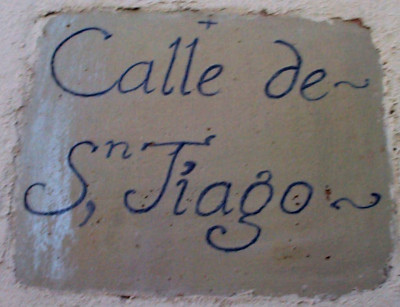

Imágenes editadas
Para la edición de esta imágen hemos seguido los siguientes pasos
- Paso 1:
-
Aunque no es imprescindible, podemos colocar unas guías que nos servirán como referencia.
Para ello pulsamos sobre las escalas superior y lateral, arrastramos y soltamos.
Para quitarlas movemos el ratón sobre la guía hasta que el cursor se transforme en una mano que apunta con el índice, pulsamos, arrastramos y soltamos fuera de la imagen.
- Paso 2:
-
Pulsamos sobre el icono de la herramienta para cambiar la perspectiva
Aparecerán puntos en las esquinas que podremos estirar para deformar la imagen. También se abrirá otra ventana en la que pulsaremos sobre el botón Transformar cuando ya nos satisfaga el resultado de la deformación
Según como estiremos la imagen, aparecerán en los bordes una cuadrícula gris, que nos indica que la zona se transparentará.
- Paso 3:
-
Recortaremos la imagen para elegir el trozo de imagen deseado. Lo haremos con la herramienta para recortar o redimensionar y pulsamos sobre la imagen, arrastramos y soltamos hasta marcar el área de la imagen que deseamos.
Podemos controlar el tamaño exacto del área seleccionada con los datos que aparecen en la ventana que se abre al utilizar la herramienta de recorte.
Podemos cambiar el tamaño del rectángulo pulsando y arrastrando sobre la esquina superior izquierda o la esquina inferior derecha.
También podemos mover el rectángulo pulsando y arrastrando las otras esquinas. Para terminar pulsamos dentro del rectángulo una vez o bien sobre el botón "recortar".
- Paso 4:
-
Podemos ver en la barra de título de la ventana el tamaño actual de la imagen.
Como sigue siendo demasiado grande para nuestro propósito, vamos a redimensionarlo: en el menú imagen elegimos escalar imagen.
Si estamos satisfechos, guardamos la imagen.
Imágen de calle de Santiago editada
Imágen original

Imágen editada
